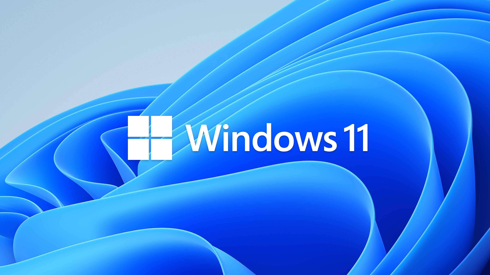
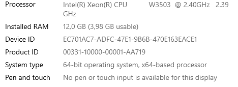

Microsoft, from Dos to Windows 11
Years of innovations and enabling of tech products and services.


XP is definitely the one I experienced and most loved after I switched from 3.1 to 95 and 98. The green grass field was an iconic wallpaper that one could use as a fact for saying that Microsoft was green before being ‘’ecolo’’ became a trend and a lifestyle. The music of the XP installation process could make you format your disk and install it again because it sounded very well.
From Dos to Windows 10, the tech industry has dramatically changed with a lot of new startups, products, services, and this cloud mindset that we have adopted. Microsoft has done its part by enabling this flow of innovations with Windows, its operating system, which is more than a window but a door to the future. A future where the best technological products are those that enable other products and services to be built and chipped. This is the most important characteristic of the tech-driven innovations that we had seen during these two decades of a world driven by computing power and automation that is currently shifting to become a world of artificial intelligence and connected objects. Microsoft has just released Windows 11, a new version of this mythic operating system that accompanied our childhood. Windows 11 claims to bring a lot of new features that have taken into account this difficult pandemic time we have experienced and which highlighted to us that maybe we should change the way we work.
My PC with Xeon CPU running at 2.10 GHz with less than 4 Go of ram cannot run Windows 11, hope yours does. Here is the link if you want to be sure that you are ready for Windows 11.

The tech industry is going so fast that it can be easy and fast to be left behind as my PC is but it really helps me be in touch with you through writing and reading until this coming one that could let me design and build games, design and run machine learning and artificial systems. This coming PC will probably run Windows 11.
For the sake of learning it can be useful for you to follow the adoption trend of windows 11 (for me it will enrich this study I am doing about OS adoption)and you can guess that there will be a lot of migration jobs coming because for sure lot of enterprises are going to switch to Windows 11.
PS: Hope you will benefit from these migration jobs for my part I am right now editing a Windows 11 video commercials that you could see soon on my Youtube channel.